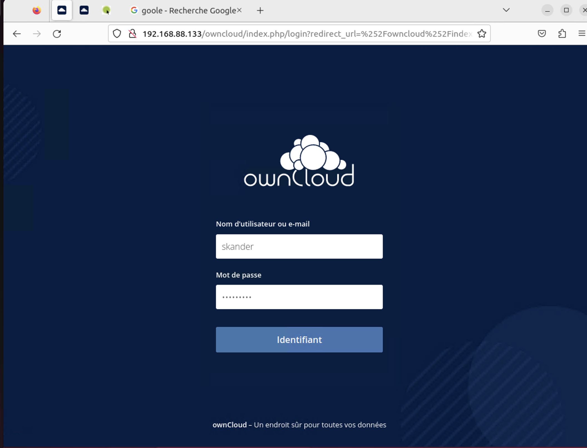
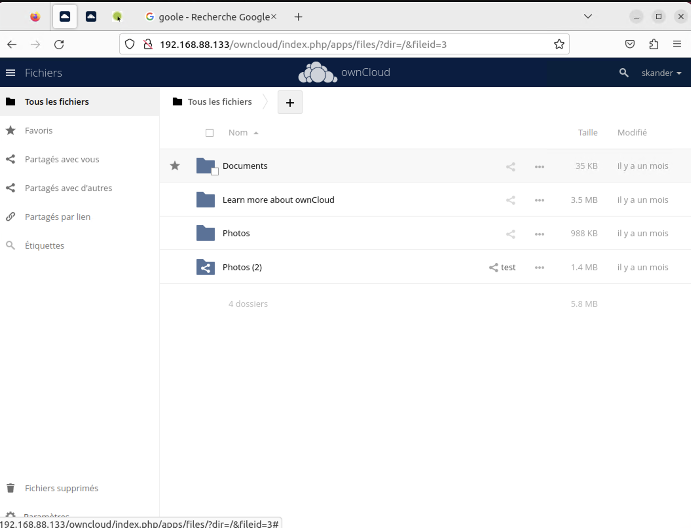
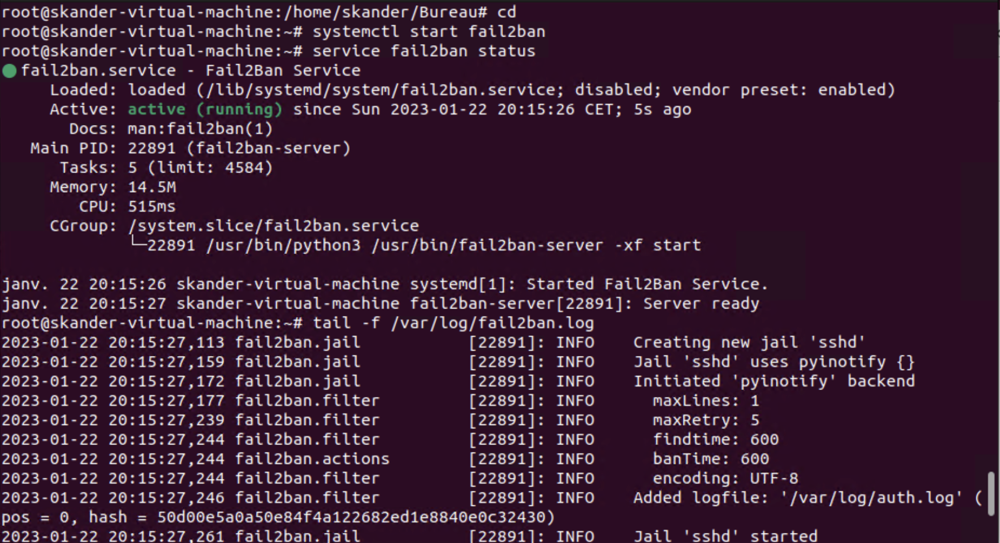

sudo apt install apache2
sudo sed -i "s/Options Indexes FollowSymLinks/Options FollowSymLinks/" /etc/apache2/apache2.conf
sudo systemctl stop apache2.service
sudo systemctl start apache2.service
sudo systemctl enable apache2.service
sudo apt-get install mariadb-server mariadb-client
sudo systemctl stop mariadb.service
sudo systemctl start mariadb.service
sudo systemctl enable mariadb.service
sudo mysql_secure_installation
sudo systemctl restart mariadb.service
sudo apt-get install software-properties-common -y
sudo add-apt-repository ppa:ondrej/php
sudo apt update
sudo apt install php7.4 libapache2-mod-php7.4 php7.4-common php7.4-mbstring php7.4-xmlrpc php7.4-soap php7.4-apcu php7.4-smbclient php7.4-ldap php7.4-redis php7.4-gd php7.4-xml php7.4-intl php7.4-json php7.4-imagick php7.4-mysql php7.4-cli php7.4-mcrypt php7.4-ldap php7.4-zip php7.4-curl -y
sudo nano /etc/php/7.4/apache2/php.ini
changes the values :
file_uploads = On
allow_url_fopen = On
memory_limit = 256M
upload_max_filesize = 100M
display_errors = Off
date.timezone = America/Florida
Now that you’ve install all the required packages, continue to start configuring the server.
sudo mysql -u root -p
CREATE DATABASE owncloud;
CREATE USER 'ownclouduser'@'localhost' IDENTIFIED BY 'password_here';
GRANT ALL ON owncloud.* TO 'ownclouduser'@'localhost' IDENTIFIED BY 'password_here' WITH GRANT OPTION;
FLUSH PRIVILEGES;
EXIT;
check your version here: https://software.opensuse.org//download.html?project=isv:ownCloud:server:10&package=owncloud-complete-files
echo 'deb http://download.opensuse.org/repositories/isv:/ownCloud:/server:/10/Ubuntu_21.04/ /' | sudo tee /etc/apt/sources.list.d/isv:ownCloud:server:10.list
curl -fsSL https://download.opensuse.org/repositories/isv:ownCloud:server:10/Ubuntu_21.04/Release.key | gpg --dearmor | sudo tee /etc/apt/trusted.gpg.d/isv_ownCloud_server_10.gpg > /dev/null
sudo apt update
sudo apt install owncloud-complete-files
cd /var/www/
sudo mv owncloud /var/www/html/owncloud/
sudo chown -R www-data:www-data /var/www/html/owncloud/
sudo chmod -R 755 /var/www/html/owncloud/
cd
sudo nano /etc/apache2/sites-available/owncloud.conf
<VirtualHost \*:80>
ServerAdmin admin@example.com
DocumentRoot /var/www/html/owncloud/
ServerName avoiderrors.com
ServerAlias www.avoiderrors.com
Alias /owncloud "/var/www/html/owncloud/"
<Directory /var/www/html/owncloud/>
Options +FollowSymlinks
AllowOverride All
Require all granted
<IfModule mod_dav.c>
Dav off
</IfModule>
SetEnv HOME /var/www/html/owncloud
SetEnv HTTP_HOME /var/www/html/owncloud
</Directory>
ErrorLog ${APACHE_LOG_DIR}/error.log
CustomLog ${APACHE_LOG_DIR}/access.log combined
</VirtualHost>
sudo a2ensite owncloud.conf
sudo a2enmod rewrite
sudo a2enmod headers
sudo a2enmod env
sudo a2enmod dir
sudo a2enmod mime
sudo systemctl restart apache2.service
1- Open the terminal and enter the following command:
sudo apt install net-tools
ifconfig
2- Search for your local IP
3- place your Local IP in the adress bar like this:
http://192.XXX.XX.XX/owncloud
sudo apt-get update
sudo apt-get install fail2ban
sudo nano /etc/fail2ban/filter.d/owncloud.conf
[Definition]
failregex={"reqId":".","remoteAddr":"<HOST>","app":"core"."Invalid ._ credentials._"}
ignoreregex =
sudo nano /etc/fail2ban/jail.d/owncloud.local
[owncloud]
enabled = true
port = http,https
filter = owncloud
logpath = /var/log/owncloud.log
maxretry = 3
bantime = 3600
findtime = 600
sudo service fail2ban restart




sudo apt install php7.4 libapache2-mod-php7.4 php7.4-common php7.4-mbstring php7.4-xmlrpc php7.4-soap php7.4-apcu php7.4-smbclient php7.4-ldap php7.4-redis php7.4-gd php7.4-xml php7.4-intl php7.4-json php7.4-imagick php7.4-mysql php7.4-cli php7.4-mcrypt php7.4-ldap php7.4-zip php7.4-curl -y